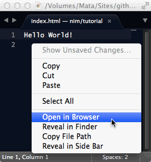

Your first HTML page
I'm assuming that you have never created an HTML page before. HTML means "HyperText Markup Language". You will soon see what this means.
This is what a very simple HTML page looks like:
<!DOCTYPE html>
<html>
<head>
<title>This appears in the tab / title bar</title>
</head>
<body>
<p>This appears inside the browser window</p>
</body>
</html>
Here's how this HTML page looks in different browsers.
Do It Yourself
In fact, your browser will display even simpler pages. In the programming community, it is a tradition that your first program in any new language should display the words "hello world". To honour that tradition, you can create your own Hello World page and open it in your browser.
If you haven't already got a text editor, download and install a trial copy of Sublime Text. Open your text editor and create a new document. You can type hello world (or any other message you like), then save your file as index.html.
Find the file that you have just created on your desktop, and double-click on it. It should open in your favourite browser.
Hello... Desktop
Actually, the world can't see your message yet. This file that you saved on your local hard drive is only visible in your browser. Your next step will be to put an HTML file onto this server, so that anyone in the world can see it.
If you are eager to continue building your game, click on 3: Getting Git in the menu on the left. Your Hello World message should be online when you have completed step 5. If you want to know more about what all the HTML code does, click on Understanding HTML Tags below and continue reading.
You can recognize HTML code because of the tags that it uses. Tags are instructions that are enclosed in < and > pointed angle brackets, in this style: <style>.
Closing Tags
Most HTML tags come in matching pairs, with an opening and a closing tag. Closing tags contain a forward slash / character, followed by the first word of the matching opening tag. The expression to describe a pair of matching tags, plus all the data between them, is HTML element. In the example above, you can see the following pairs of tags, creating five different HTML elements.
<html>...</html>This tells the browser to treat all the information between these tags as HTML code. There should always be an opening
<html>tag at the beginning of an HTML document, and a closing</html>tag at the end.There should only be one
htmlelement in an HTML file.<head>...</head>The
headelement contains instructions to the browser that are not shown inside the browser window. In sections 7 and 8, you will add instructions to tell the browser where to find additional files to download. Theheadcan also contain information for search engines that summarize the contents of the page.<title>...</title>As you can see from the screen shot in figure 1, the text inside the
titleelement appears in the title bar of the browser window, or as a label in the tab for the current page.Search engines like Google, Yandex and Baidu use the text in the
titleelement to understand the main purpose of the page.<body>...</body>The
bodyelement contains everything that will appear inside the browser window. There should only be onebodyelement.<p>...</p>- This indicates a paragraph of text.
Self-closing Tags
Some tags, such as <!DOCTYPE html> are self-closing. A self-closing tag stands on its own, with no matching tag to close it later. Self-closing tags are typically used for elements that cannot have text inside then. For example
<!DOCTYPE html>- The very first line of an HTML file tells the browser what kind of file it is. Browsers can read many kinds of files: XML files, which contain arrays of data, SVG files which contain the formulae needed to draw smooth Scalable Vector Graphics, image files such as JPG and PNG, and many more.
<img>- The
<img>tag tells the browser where to find a file that displays an image. You will be working with the<img>tag in section 4: Adding an image. <link>- The
<link>tag tells the browser where to find a file that gives rules on the appearance and layout of the web page. You will be using the<link>tag in section 7: Styling with CSS. <input>- The
<input>tag lets you create elements such as buttons and editable fields that allow the visitor to interact with your page. You will be adding a checkbox<input>to your page in section 21: Showing the rules. <meta>- The
<meta>tag can be used to tell the browser and bots that visit your site what your page is about, what language it's in, how it should be categorized in search engines. You will be adding a<meta>in section 22: Invisible data.
By the time you gave finished this tutorial, you will also have used all the following tags (in order of appearance):
You can find a full list of the tags used to create HTML elements here.
If you are using Sublime Text, you can use a shortcut to open your HTML file in a browser.

Why call your file index.html? In fact, you could call your html file anything you like. The fact that the first line is <!DOCTYPE html> tells your browser all it needs to know. When you visit a site, if your browser doesn't ask for any particular file, the server on the site will send you index.html by default, if a file with that name exists. Unless you have a very good reason for using a different name, it is good practice to use index.html
As you saw in your Hello World test, if a file has an .html extension, most modern browsers will treat everything inside it as HTML, even if there is no <html> element, if there is more than one <html> element, or if there is text outside the html element. Modern browsers may also display content correctly even if the body is missing, or if there is more than one body element. Nonetheless, it is good practice to use these elements correctly. Other developers will notice if your code is badly written.
The browser will not display any text between an opening angle bracket < character and a closing angle bracket >. If you use a tag that the browser does not recognize, such as <unofficial_tag>, the browser will simply ignore it. Older browsers may ignore tags that were officially introduced after they were released.
Ouch. Your HTML page is not appearing correctly in the browser. Perhaps one of these steps will help you:
- If you are not using Sublime Text, perhaps your text editor is saving your files in a
rich textformat, such as.docor.rtf. Make sure that you are saving in a plain text format, using.htmlas the extension. - There may be many files called
index.htmlon your computer. Make sure that you are opening the right one. If you are using Sublime Text, you can use the right-click > Show in Browser shortcut, to be sure that you are opening the same document that you are working on.
Getting started with Git
GitHub is a meeting place for the open source community, where ideas are shared, where everyone can benefit from the energy and initiatives of others. A budding programmer like you has everything to gain from joining a community like this.
The Git application itself tracks the progress of your project. It creates a space for you make experiments, to make mistakes, to explore new possibilities without getting lost.
git --version
It's quite possible that git is already installed on your computer. To find out, open a Terminal window and type:
git --version
If all goes well, you should see something like the screenshot below.
git --version on different operating systemsIf your version of git is 1.7.9.5 or earlier, or if you see a message like git is not a recognized command, then you can find more details about what to do in the Installing and Updating Git section below.
If you simply want to keep moving forward, then click on 4: Your GitHub repo in the menu on the left. If you want to learn more about git commands, then you can continue reading the Understanding Git Commands section.
Installing Git: Windows
Git is not installed by default on the Windows operating system. The easiest way to install it is to download an installer. When you click on the link, the download should start automatically.
You can launch the installer application and simply click on the Next > button, until you reach the screen Adjusting Your PATH Environment. (See image below). Here, it is best to select the Use Git From The Windows Command Prompt radio button. The Windows Command Prompt uses the Windows-standard / character in path names, which means that you can copy and paste path names from the Explorer windows, or drag files onto the Command Prompt window to paste their paths automatically into the window. Perhaps later, you will prefer to use the Git Bash application: selecting the second radio button, as shown in the image below, will allow you to choose the option you like best.
Updating Git: Mac
Git is installed by default on Mac OS X. However, older versions of the Mac operating system may have versions which are now considered obsolete. Mac OS 10.8 (Snow Leopard) for example, comes with version 1.7.4.4. Using this would cause an error if relied on it when following the instructions in section 5.
The Mac OS X operating system relies on its own version of Git for certain housekeeping tasks. As a result, is is better not to update the pre-installed version of Git.
A safer option is to install an up-to-date version of Git, and to use the newer version for all your work.
You can download the most recent version of Git from git-scm.com, and run the installer. However, when you run git --version in the Terminal window, you will probably see that the old version continues to be used.
To tell your Mac that you want to use the newer version, you need to execute some command line commands. Here are commands that I use on Mac OS 10.8.5 after running the Git installer for version 2.3.5:
git --version
git version 1.7.4.4
which git
/usr/bin/git
The original version is still active. It as located in a hidden folder. The Git installer places the new version in a different hidden file. The next command tells Mac OS X where to find the newer version. The following commands confirm that the newer version is now active.
PATH=/usr/local/git/bin:$PATH which git /usr/local/git/bin/git git --version git version 2.3.5
You can use the Git application to work with many different sites that provide version control hosting. Some examples are: Bitbucket and GitLab. Other sites that help you to create applications in the cloud, such as Heroku and Cloud 9 offer integration with GitHub.
You can find a list of hosted version control services on slant.co
Your GitHub repository
Now you're ready to open a GitHub acccount. This wont't take long (although finding a username that you like and that isn't already taken can be time-consuming). I've used the name "blackslate" in my examples.
Go to the Join GitHub page, and fill in the form.
At the time of writing, Git requires you to use only the characters A-Z, a-z and - (hyphens) for your username and for the names of your projects. Names with other punctuation, special characters, accents or non-Roman letters, like !android_ or Andréa or Андрей, are not permitted.
You might like to take GitHub's own tour now, to learn about the basic Git commands, or you might like to bookmark the Hello World tutorial or the Try Git tutorial so that you can come back to these after the world has seen you say "Hello!"
On the right of the page, you can see a big green New Repository button. Click on that and fill in the Repository Name field. This first time, to keep everything simple, leave everything else exactly the way it is, and click on the Create Repository button. It's a good idea to fill in the optional Description field, though.
You'll find yourself on a page full of choices and command line code. No worries. When you find yourself here again later, you will have a much clearer understanding of what all this means.
The most important thing to do now is to copy the URL for your new GitHub repository. You can do this by clicking on the Copy To Clipboard button, as shown in Figure 10 above. You'll need to paste this URL into a Terminal window in the next step.
Your immediate aim is to get your Hello World page online, so I propose to take an unconventional shortcut. If you want to know what the conventional path is, then you can read the Branches and Pages section below. If you want to move along quickly, just click on the item 5: Creating a branch in the menu on the left.
The repository that you have just created is empty. By default, Git calls it master. You can think of it as the main trunk of a tree.
Normally, you would save your work in the master branch of your project. When you want to add something new to your project, the normal practice is to create a secondary branch, and to work on that.This means that the master branch remains strong and solid, and any mistakes you make while you are working will not affect it. When everything in the new branch is working well, you can merge it back into the main branch, like one arm of a river follows a different course before flowing back into the main channel.
You can give your branches any name you like (so long as they only use the 53 permitted characters). Normally, you would use a name that describes the change you are about to make.
While you are working on a project, it is often helpful to maintain a web site to let people know what you are doing, how they can help, and how your project can help them. GitHub has used a neat technique that allows you to integrate your website into your GitHub repository itself.
If you create a branch called gh-pages (short for GitHub pages), and you place a file named index.html in the root folder of the branch, then GitHub will automatically treat the gh-pages branch as a web site.
You can find more information about this at GitHub Pages.
To get your first project online as quickly as possible, you can :
- Create a master branch (as you have just done) and leave it empty
- Create a gh-pages branch (as you are about to do) and use it for all your development.
- Create secondary branches, as your work progresses, and merge them back into the gh-pages branch when you are ready.
Telling the world about your project is the best way to find people who are willing to help you. In future projects, you will know how to create a strong web presence, right from the beginning... and you will also know that you should use the master branch for your main development.
Oops. Something went wrong. Here are some things that you can check.
- When you created your repository, did you click on any buttons, other than Create Repository?
- If you added a ReadMe file, a .gitignore file or a license file to your repository, online through the GitHub "new repository" page, then the remote repository on the GitHub site will already contain files. You won't be able to push any new files to the remote repository until you have downloaded them to your local repository.
Creating a branch
Any sufficiently advanced technology is indistinguishable from magic. Arthur C. Clarke
You've just created an empty master repository, like a dry river bed. And now I'm going to show you how to make a branch from this repository. This is much easier to do when the master repository is still empty.
Many thanks to Rachel Berry of GitHub for pointing out this technique to me.
The next few instructions may seem a little like magic to you for now, but you will soon make sense of them. You can read up about the git commands in the Understanding Cloning section below. Here's what you need to do:
- On your desktop, create an empty folder in the place where you would like to save your new project. I called my folder
nim. It might be easier for you if you do the same. - Open a Terminal window. You're going to create a command that gives it control of your new
nimfolder. - Type
cd(that's "cd " followed by a space). This means change directory. - Drag the icon of your
nimfolder onto the Terminal window. This will automatically insert the path to your folder after thecdthat you have just typed. - Press the Enter key to execute the command. You can imagine that the Terminal now has power over what happens in the
nimfolder.
cd command in a Terminal window- Still in the Terminal window, type:
git clone(followed by a space), then paste in the URL that you copied at the end of the last step, then add a space andgh-pages. The complete command might look something like this:git clone https://github.com/blackslate/nim.git gh-pages
Press the Enter key.
On Windows, the standard Ctrl-V keyboard shortcut may not work in a Command Prompt window. You may need to right-click, then select Paste from the contextual menu.
The clone command should copy all the contents of your new repository on the GitHub server (which is empty) into a folder named gh-pages inside your nim folder. The output in the Terminal should look something like this:
git clone to create a local repository.The git clone command also created an invisible folder called .git inside the new gh-pages folder, as you can see in Figure 13 below. This contains all the data that the Git application needs to keep track of the changes that you make to your project.
.git folderTo learn how to make "invisible" files visible on your computer, you can read the Tips and Tricks section below.
Now for some more command line magic. (Do you remember what the cd command does?)
- In the Terminal window, type the following 3 commands:
cd gh-pages git checkout --orphan gh-pages git status
To understand what the checkout --orphan command does, see the Tips and Tricks section below. The git status command is one that you will use often. It lists all the files that you have changed, before you commit the changes to Git's memory system.
Here's how your Terminal window might look now:
Just a few more actions, and you'll see your Hello World web page online.
- On your computer desktop, find the
index.htmlfile that you made in step 2, and drag or copy it into your new gh-pages folder. - In the Terminal window, run the
git statuscommand again. You'll see that Git is aware of the change that you have made.
status of your project is updated each time you make a change.- Now you're going to tell Git that you are confident about the changes that you have made. In the Terminal window, type the following 3 commands:
git add -A git commit -m "Initial commit to the gh-pages branch" git push origin gh-pages
That's it! Now you can visit your new web site is your browser. Just one last action: to type in the URL for your GitHub site. For me, it will be:
http://blackslate.github.io/nim/For you, if you called your repository "nim", then all you have to do is replace my "blackslate" username with your own username.
http://<yourUserName>.github.io/nim/
Showing invisible files
Adding an Image
Saving Your Changes to GitHub
Creating Four Rows of Images
Using Cascading Style Sheets
Hiding Images with JavaScript
Resetting the Game
The Game Layout
Whose Turn Is It?
Enforcing the Rules
One Row at a Time
Who Won?
Using an Overlay
Creating a Computer Player
Making Random Moves
Making Intelligent Moves
Taking Care of the Final Details
Showing the Rules
Invisible data
If you have any difficulty anywhere in this tutorial, please tell us about it, and we'll do our best to deal with it for you. Your questions and suggestions can help us make this tutorial better.
Overview
This tutorial shows you how to create a simple strategy game, where the computer will beat you every time, unless you know how to avoid the trap.
You will be learning to write HTML, CSS and JavaScript. You will also learn how to use GitHub to save and display your work, and how to write code that tests your code. You don't need any previous knowledge of programming, but an inquisitive mind is a bonus.
You can see the completed game here. You might like to try to beat the computer before you learn to write the code that will beat all other players.
If you want to know more about HTML, CSS, JavaScript, Git and GitHub, you can read the optional If A Web Page Were A Meal section below.
HTML
HTML would be the food on your plate. HTML provides the content and the structure of the information in your web page.
A web page that just contains HTML can be informative, and can contain links to other pages.
CSS
CSS would be the way table is laid and the way the food is presented on your plate. CSS takes care of the colour, shape and position of the HTML elements. It's what gives the page its style
A web page that just contains CSS is like a deserted restaurant: neat and decorative surroundings, all prepared for something to happen.
JavaScript
JavaScript would be the animation and conversation. JavaScript is what makes the web page come to life, with interactions, animations, cause and effect. JavaScript can connect you to other internauts in other places, making the web a social place to be.
A web page that just contains JavaScript can create all the HTML and CSS that it needs.
Git
Git would be the event organizer, discreetly ensuring that everything is going to plan.
A web page does not need Git to manage it. When you first start creating web pages they will be simple enough for you to keep all your ideas tidy in your head as you are working. But as your experience and your initiatives grow, you will be happy to have Git to keep track of everything for you. Working with Git right from the beginning, on your first small projects, will give you confidence that you are ready to tackle larger projects.
Everyone is a beginner at something, and has expertise in other areas. This tutorial was written with the understanding that some pages might teach you nothing new, and others might present you with a challenge.
In this tutorial, each page starts with the simplest instructions that you need to get to the next page. If these instructions work for you and you understand why they work, then there is no more to be said.
At the end of this starter section, you'll see a green box something like this:
If you're ready to go on, click here, to go to the next page. If you want to know more, you can read the optional sections below.
If you can complete the entire tutorial without reading any of the optional sections below the green box, congratulations! We'd like to hear from you, so that we can feel good, too.
On the other hand, if you read all the optional material carefully, and you are still unable to get the instructions to work for you, then please let us know. We'll do all we can to make the instructions and explanations better.
It would be helpful if you can tell us:
- What operating system you are using (eg. Windows 8.1, Mac 10.8.5 Mountain Lion, Ubuntu Utopic Unicorn...)
- What browser you are testing your site with (Google Chrome, Mozilla Firefox, Internet Explorer 9...
- What text editor you are using to write your code. (If you are using Sublime Text, we may be able to be more helpful)
- What version of Git you have running.
- Where we can find your GitHub repository, so that we can see what you've done so far.
- What's not working out for you...
If you have any difficulty anywhere in this tutorial, please do create a new issue for us, and we'll do our best to deal with it for you. Keep in touch. Your questions and suggestions can help us make this tutorial better.